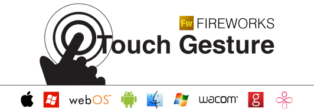

Gesture Library
The Touch Gesture Library is a unique set of symbols for software designers and developers working on touch-based user interfaces.

Platform Support
How popular software platforms support core touch gestures.
| Platform | Platform Gesture | Platform Description | Core Gesture |
|---|---|---|---|
| iPhone OS | Tap | A user gesture used to press or select a control or link (analogous to a singleclick in a desktop application). To tap, users make a quick up-and-down motion with a finger, lightly striking the screen. | Tap |
| iPhone OS | Double Tap | A user gesture used to zoom in or out of content or an image. A double tap consists of two quick taps. | Double Tap |
| iPhone OS | Flick | A user gesture used to scroll or pan quickly. To flick, users place a finger on the screen and quickly swipe it in the desired direction. | Fling |
| iPhone OS | Drag | A user gesture used to scroll,move the viewport, or pan. To drag, users place a finger on the screen and move it in the desired direction without lifting it from the screen. | Drag |
| iPhone OS | Pinch Open | A two-finger user gesture used to zoom in. To pinch open, users place the thumb and a finger (or two fingers) close together on the screen and move them apart without lifting them from the screen. | Spread |
| iPhone OS | Pinch Close | A two-finger user gesture used to zoom out. To pinch close, users place the thumb and a finger (or two fingers) a little distance apart on the screen and move them toward each other without lifting them from the screen. | Pinch |
| iPhone OS | Touch and hold | A user gesture used to display an information bubble, magnify content under the finger, or to perform specificactions in built-in applications and features. To touch and hold, users touch the screen, leaving their finger motionless until the information is displayed or the action occurs. | Press |
| iPhone OS | Two-finger scroll | A user gesture used to scroll content in an element with overflow capability or a scrollable inline frame element. A two-finger scroll is a drag performed with two fingers moving together in the same direction. | Drag (Two-finger) |
| Platform | Platform Gesture | Platform Description | Core Gesture |
| Windows Phone 7 | Tap | Actions on an item in a two step process. Stop a list from scrolling. Single touch on the screen. | Tap |
| Windows Phone 7 | Double Tap | Toggle between "in" and "out" zoom states of a control or application. | Double Tap |
| Windows Phone 7 | Touch and hold | Shows options (context menu) for an item | Press |
| Windows Phone 7 | Pan | Moves content via direct manipulation (content sticks to finger and follows). A pan can reorder or move a specific item. | Drag |
| Windows Phone 7 | Flick | Moves content | Fling |
| Windows Phone 7 | Pinch | Continous zoom | Pinch |
| Windows Phone 7 | Pinch | Continous zoom | Spread |
| Platform | Platform Gesture | Platform Description | Core Gesture |
| Palm webOS | Tap | invokes an action or opens an item. Position the insertion cursor | Tap |
| Palm webOS | Double Tap | to perform actions like zoom in/out | Double Tap |
| Palm webOS | Flick | to scroll through lists, or quit an application | Fling |
| Palm webOS | Swipe | to the right in lists, to delete items | Drag |
| Palm webOS | Touch & Drag | to scroll | Drag |
| Palm webOS | Touch & Hold | to enter "reorder" mode. Then drag items to move them. | Press |
| Palm webOS | Spread | using 2 fingers, to zoom in/out on a web page or a picture | Spread |
| Palm webOS | Pinch | using 2 fingers, to zoom in/out on a web page or a picture | Pinch |
| Palm webOS | Rotate | Touch with 2 fingers and rotate - to rotate content | Rotate |
| Platform | Platform Gesture | Platform Description | Core Gesture |
| Android | Tap | None provided | Tap |
| Android | Double Tap | None provided | Double Tap |
| Android | Flick | None provided | Fling |
| Android | Drag | None provided | Drag |
| Android (only 2.1) | Pinch | None provided | Spread |
| Android (only 2.1) | Pinch | None provided | Pinch |
| Android | Touch and hold | None provided | Press |
| Platform | Platform Gesture | Platform Description | Core Gesture |
| OSX (trackpad) | Scroll | Scroll up and down a page | Drag (Two-finger) |
| OSX (trackpad) | Swipe | Flip through your photo libraries | Drag (Three-finger) |
| OSX (trackpad) | Swipe | Show your desktop, view all open windows, or switch applications | Drag (Four-finger) |
| OSX (trackpad) | Pinch | Zoom in and out | Pinch |
| OSX (trackpad) | Expand | Zoom in and out | Spread |
| OSX (trackpad) | Two-finger rotating | Rotate photos, pages, and more. | Rotate |
| OSX (trackpad) | Tap | Press or select a control or link | Tap |
| OSX (trackpad) | Click & Drag | Move content. | Drag |
| OSX (trackpad) | Secondary Click A | Right-click | Tap (Two-finger) |
| OSX (trackpad) | Secondary Click B | Right-click | Tap (on specific area on trackpad) |
| Platform | Platform Gesture | Platform Description | Core Gesture |
| OSX (Magic Mouse) | 360° scroll | Brush one finger along the surface to scroll in any direction and to pan a full 360 degrees. | Fling |
| OSX (Magic Mouse) | Screen zoom | Hold down the Control key on your keyboard and scroll with one finger on surface to enlarge items on your screen. | Drag |
| OSX (Magic Mouse) | Two-finger swipe | Using two fingers, swipe left and right along the surface to advance through pages in Safari or browse photos in iPhoto. | Drag (Two-finger) |
| Platform | Platform Gesture | Platform Description | Core Gesture |
| Microsoft Windows 7 | Drag | Touch and slide your finger on screen. Like dragging with a mouse, this moves icons around the desktop, moves windows,selects text (by dragging left or right), etc. | Drag |
| Microsoft Windows 7 | Scroll | Drag up or down on the content (not the scrollbar!) of scrollable window to scroll. Scrolling is available with one or more fingers. | Drag |
| Microsoft Windows 7 | Zoom | Pinch two fingers together or apart to zoom in or out on a document. | Spread |
| Microsoft Windows 7 | Zoom | Pinch two fingers together or apart to zoom in or out on a document. | Pinch |
| Microsoft Windows 7 | Two-Finger Tap | Tapping with two fingers simultaneously zooms in about the center of the gesture or restores to the default zoom – great for zooming in on hyperlinks. | Tap (Two-finger) |
| Microsoft Windows 7 | Rotate | Touch two spots on a digital photo and twist to rotate it just like a real photo. | Rotate |
| Microsoft Windows 7 | Flicks | Flick left or right to navigate back and forward in a browser and other apps. | Fling |
| Microsoft Windows 7 | Press-and-hold | Hold your finger on screen for a moment and release after the animation to get a right-click. | Press |
| Microsoft Windows 7 | Press-and-tap with a second finger | To get right-click, just like you would click the right button on a mouse or trackpad. | Press and Tap |
| Microsoft Windows 7 | Tap | Touch and release to click. This is the most basic touch action. | Tap |
| Microsoft Windows 7 | Double Tap | To open files and folders. | Double Tap |
| Platform | Platform Gesture | Platform Description | Core Gesture |
| Wacom Bamboo | Navigate | Touch and drag across surface. | Drag |
| Wacom Bamboo | Click or Select | Highlight and select an item. | Tap |
| Wacom Bamboo | Double Click | Open an application or file. | Double Tap |
| Wacom Bamboo | Right-click | Bring up a context menu. | Tap (Two-finger) |
| Wacom Bamboo | Scroll | Scroll up and down a page | Drag (Two-finger) |
| Wacom Bamboo | Zoom out | Spread | |
| Wacom Bamboo | Zoom in | Pinch | |
| Wacom Bamboo | Rotate | Place two fingers on surface and rotate to left or right. | Rotate |
| Wacom Bamboo | Back & Forward | Swipe two fingers across surface. | Drag (Two-finger) |
| Wacom Bamboo | Select & Drag | Select by tapping once then drag across surface. Moves objects. | Drag |
| Platform | Platform Gesture | Platform Description | Core Gesture |
| GestureWorks (Flash) | One Finger Single Tap | Touch and remove a single finger on the surface. | Tap |
| GestureWorks (Flash) | One Finger Double Tap | Touch and remove a single finger on the surface twice. | Double Tap |
| GestureWorks (Flash) | Two Finger Single Tap | Touch and remove two fingers on the surface simultaneously. | Tap (Two-finger) |
| GestureWorks (Flash) | Two Finger Double Tap | Touch and remove two fingers from the surface twice. | Double Tap (Two-finger) |
| GestureWorks (Flash) | Scroll (Horizontal) | Place two fingers on the surface at the same time, vertically positioned to each other, then drag both fingers horizontally. | Drag |
| GestureWorks (Flash) | Scroll (Vertical) | Place two fingers on the surface at the same time, horizontally positioned to each other, then drag both fingers vertically. | Drag |
| GestureWorks (Flash) | One Finger Drag | Place one finger on the surface and move the finger from one location to another. | Drag |
| GestureWorks (Flash) | Multi-point Drag | Place one hand on the surface and move the hand from one location to another. | Drag (Multi-finger) |
| GestureWorks (Flash) | One Finger Flick | Flick tip of finger across the surface. | Fling |
| GestureWorks (Flash) | Two Finger Flick | Flick tips of two fingers together across the surface. | Fling (Two-finger) |
| GestureWorks (Flash) | One Hand Zoom | Place the fingers of one hand on the surface and draw them apart or together to scale an element on the surface accordingly. | Spread |
| GestureWorks (Flash) | Multi-point Zoom | Start with both hands together and move them apart across an area on the surface to zoom in. Pull both hands closer to each other to zoom out. | Spread (Multi-finger) |
| GestureWorks (Flash) | Pinch Zoom | Place the fingers of one hand on the surface and draw them apart or together to scale an element on the surface | Pinch |
| GestureWorks (Flash) | Two Finger Rotate | Place two fingers on the surface and turn the hand at the wrist to rotate an image on the surface | Rotate |
| GestureWorks (Flash) | Multi-point Rotate | Place both hands on the surface and move them simultaneously in a circular motion to rotate an image on the surface. | Rotate (Multi-finger) |
| GestureWorks (Flash) | Precise Tilt (Yaw) | Move three fingers in a vertical line to tilt an object in the Y plane (precise increments). | Drag (Three-finger) |
| GestureWorks (Flash) | Aggressive Tilt (Yaw) | Move three fingers in a vertical line to tilt an object in the Y plane. | Drag (Three-finger) |
| GestureWorks (Flash) | Precise Tilt (Roll) | Move three fingers in a horizontal line to tilt an object in the X plane (precise increments). | Drag (Three-finger) |
| GestureWorks (Flash) | Aggressive Tilt (Roll) | Move three fingers in a horizontal line to tilt an object in the X plane. | Drag (Three-finger) |
| Platform | Platform Gesture | Platform Description | Core Gesture |
| Microsoft Surface | Tap | Press and then release | Tap |
| Microsoft Surface | Slide or push | Move the object under your finger with a sliding or pushing action | Drag |
| Microsoft Surface | Flick | Press, slide quickly, and then release | Fling |
| Microsoft Surface | Touch-and-turn | Slide your finger on the content around a point of the content; you can also fake this carefully with manipulations in ScatterView | Drag (Around an object) |
| Microsoft Surface | Spin | Twist quickly to rotate the object | Rotate |
| Microsoft Surface | Pull apart Stretch | Pull fingers apart on two hands | Spread (Two-finger) |
| Microsoft Surface | Push together Shrink | Bring fingers together on two hands | Pinch (Two-finger) |
| Microsoft Surface | Twist | Twist the object with two or more fingers, like turning a knob or paper | Rotate |
| Microsoft Surface | Pinch | Bring two fingers together on one hand | Pinch |
| Microsoft Surface | Squeeze | Bring three or more fingers together on one hand | Pinch (Three-finger) |
| Microsoft Surface | Spread | Pull fingers apart on one hand | Spread (Five-finger) |
| Microsoft Surface | Pin turn | Pin the object in place with one finger while the other finger drags the object around the pinned point | Rotate |